What is a launcher icon?
Launcher icons are icons that uniquely represent apps on various screens like home screen, launcher screen and settings screen. It is important for you to understand how to correctly manage the launcher icons for your app.
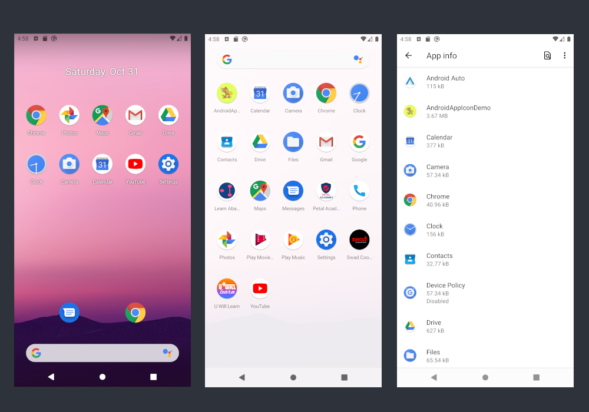
Adaptive Launcher Icons
Google added support for adaptive launcher icons in Android 8.0 (API level 26). Adaptive launcher icons allow launcher icons to be displayed in a variety of shapes accross different device models. For example, Samsung might show circular icons (1st in the below image) for all apps on one of their devices, while Motorola might want to show a completely different shape (last in the below image).
Device manufacturers opt for different icon shapes and animations to be used on their devices. Adaptive Icons allow you to define a single icon that can be converted to any shape required by the OEM device.
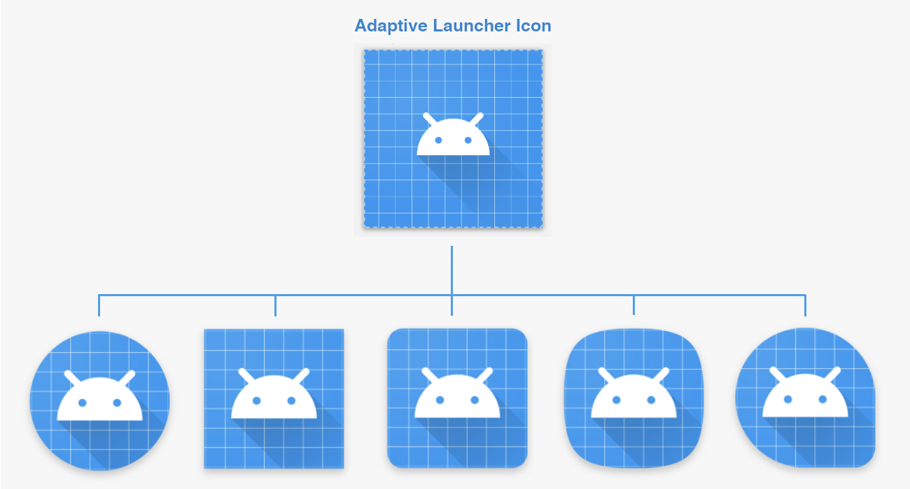
Adaptive icons are actually made up of two layers. In this codelab, we will be discussing how to add both the layers in an Android project.
Foreground Layer (Top)
- 108dp*108dp
- May include transparency
Background Layer (Bottom)
- 108dp*108dp
- Must be fully opaque
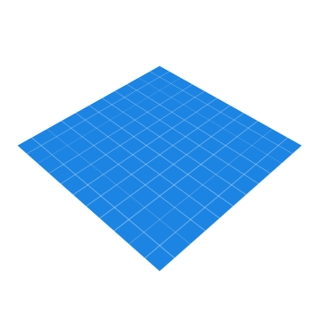
To learn more about Adaptive Icons, refer to below two links.
- https://developer.android.com/guide/practices/ui_guidelines/icon_design_adaptive
- https://medium.com/google-design/designing-adaptive-icons-515af294c783
What You'll Learn
- How to support Adaptive Launcher Icons in your Android project?
- Image sizes required for Foreground and Background layers
- Which folders and files are used to support Adaptive Launcher Icons?
We will be creating a new Android project and add new Launcher Icons to it.
What will you need?
- Android Studio 4.1
- Icon images
Create new project
Choose "Create New Project" on the welcome screen of Android Studio 4.1
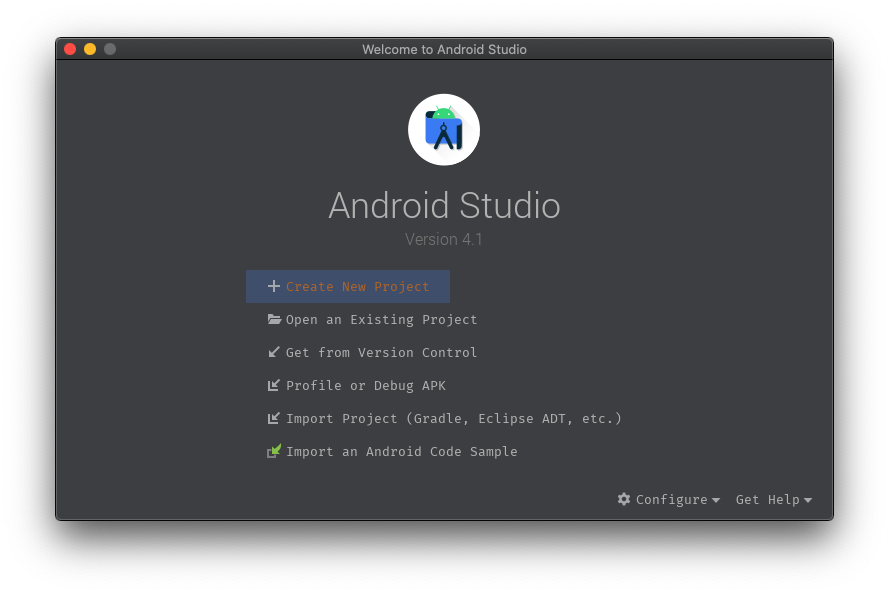
Select "Empty Activity" option from the "Select a Project Template" screen
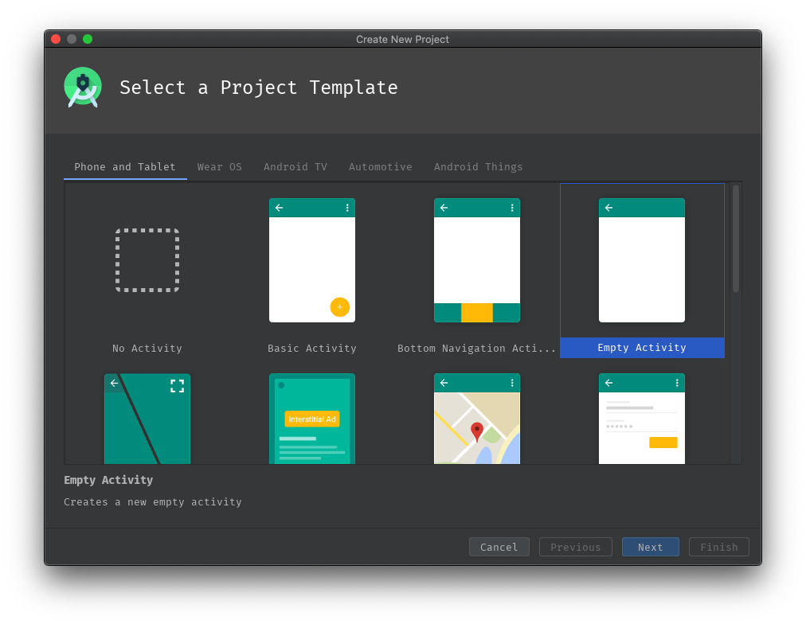
Enter "AndroidLauncherIconDemo" as the name of the app and click "Finish"
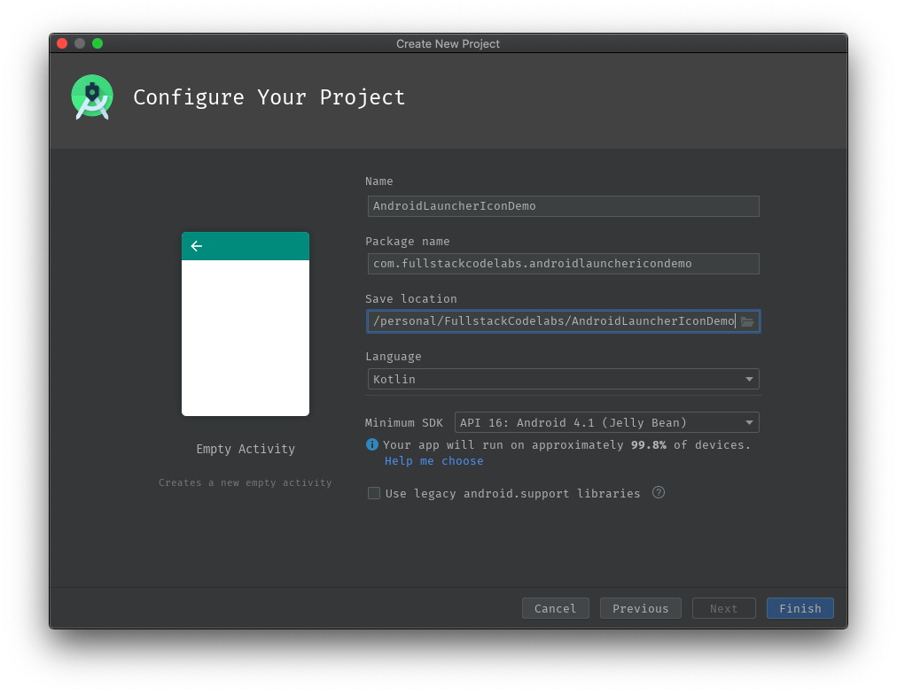
Commit the code using Git
It's always good to commit the code generated by Android Studio. This lets you keep track of the changes you make.
$ git init
$ git add --all
$ git commit -m "Created a new project using Android Studio 4.1 -> Empty Activity"
Download the Icon Images
You can right-click on the below links and click Save As to download the files.
Foreground Image
Background Image
Let's look at the default icon files generated by Android Studio 4.1. You can browse or download the zip for the source code of the default project generated by Android Studio.
AndroidManifest.xml
By default, there are two icons defined in the application tag. Both use resources from the mipmap folder. mipmap directory is specifically used to store app icons. All other images are stored in the drawable-* folder.
<manifest>
<application
...
android:icon="@mipmap/ic_launcher"
android:roundIcon="@mipmap/ic_launcher_round"
...>
</application>
</manifest>
mipmap folder
- mipmap folder has
ic_launcher.png&ic_launcher_round.pngfiles in all density folders (mipmap-hdpi, mipmap-mdpi, mipmap-xhdpi, mipmap-xxhdpi & mipmap-xxxhdpi). Used for API level < 26. - mipmap folder has
ic_launcher.xml&ic_launcher_round.xmlfiles in the mipmap-anydpi-v26 folder. Used for API >= 26.
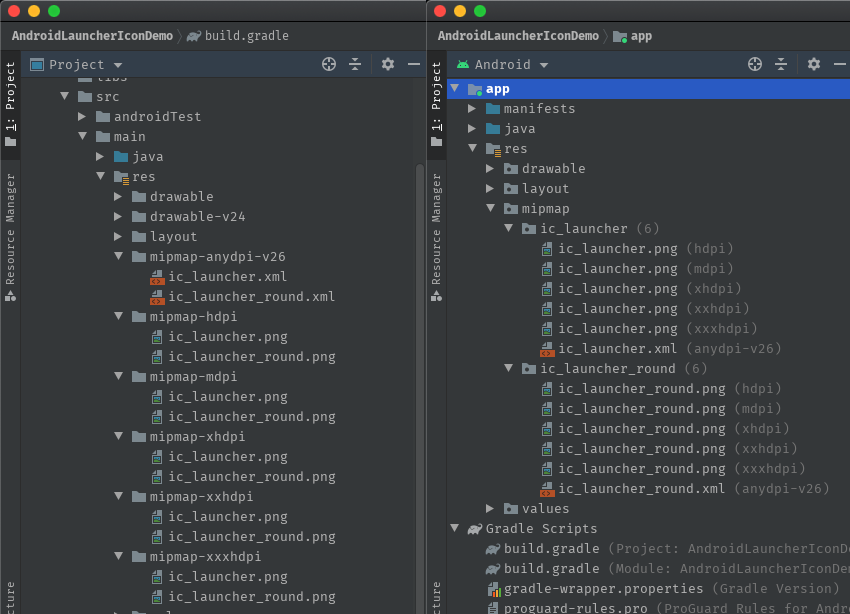
mipmap-hdpi to mipmap-xxxhdpi
ic_launcher.png - To be used on API level < 26 devices where non-circular launcher icon is required.
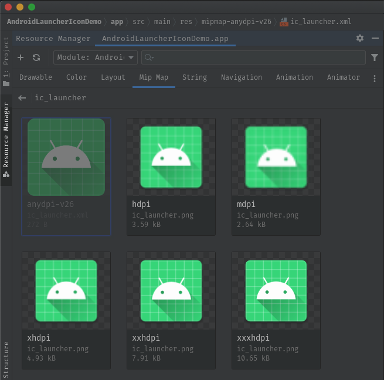
ic_launcher_round.png - To be used on API level < 26 devices where circular launcher icon is required.
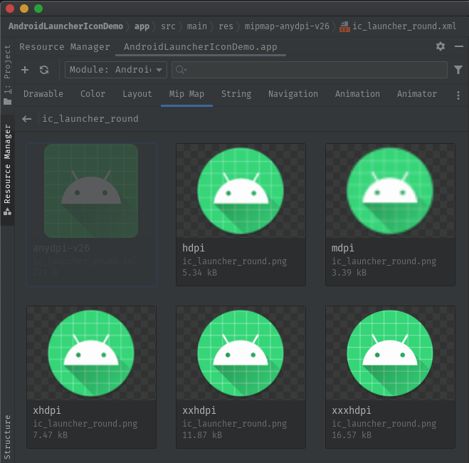
File Sizes - Below are the exact sizes of the icons generated by Android Studio
Folder | File | Size |
mipmap-mdpi | ic_launcher.png / ic_launcher_round.png | 48x48 |
mipmap-hdpi | ic_launcher.png / ic_launcher_round.png | 72x72 |
mipmap-xhdpi | ic_launcher.png / ic_launcher_round.png | 96x96 |
mipmap-xxhdpi | ic_launcher.png / ic_launcher_round.png | 144x144 |
mipmap-xxxhdpi | ic_launcher.png / ic_launcher_round.png | 192x192 |
mipmap-anydpi-v26
Both ic_launcher.xml and ic_launcher_round.xml use ic_launcher_background and ic_launcher_foreground from drawable folder.
ic_launcher.xml - To be used on API level > 26 devices where non-circular launcher icon is required.
<?xml version="1.0" encoding="utf-8"?>
<adaptive-icon xmlns:android="http://schemas.android.com/apk/res/android">
<background android:drawable="@drawable/ic_launcher_background" />
<foreground android:drawable="@drawable/ic_launcher_foreground" />
</adaptive-icon>
ic_launcher_round.xml - To be used on API level > 26 devices where non-circular launcher icon is required.
<?xml version="1.0" encoding="utf-8"?>
<adaptive-icon xmlns:android="http://schemas.android.com/apk/res/android">
<background android:drawable="@drawable/ic_launcher_background" />
<foreground android:drawable="@drawable/ic_launcher_foreground" />
</adaptive-icon>
drawable folder
There are 2 files related to launcher icons in the drawable folder. ic_launcher_background.xml in the drawable folder. ic_launcher_foreground.xml in the drawable-v24 folder. ic_launcher_foreground.xml is placed in the drawable-v24 folder since android:fillColor in that file uses gradient which is only supported on SDK 24+
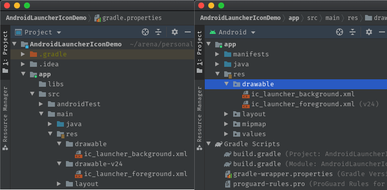
ic_launcher_foreground.xml
Holds the vector definition for the image to be used as the foreground of the adaptive launcher icon
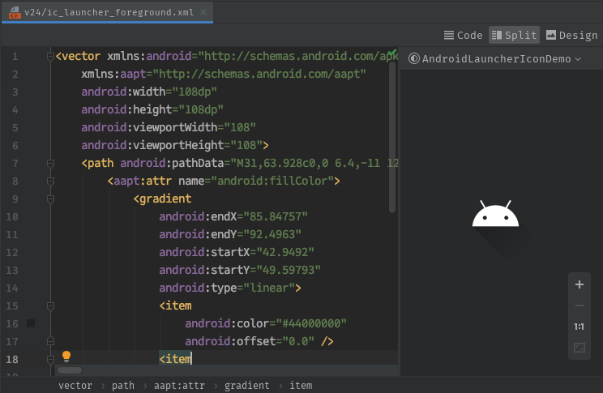
ic_launcher_background.xml
Holds the vector definition for the image to be used as the background of the adaptive launcher icon
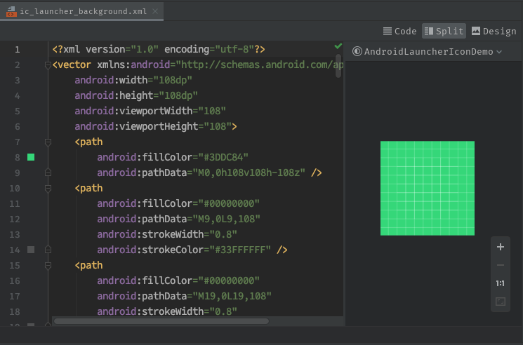
Switch to the Android view and select all the icons files, right-click and click on Delete.
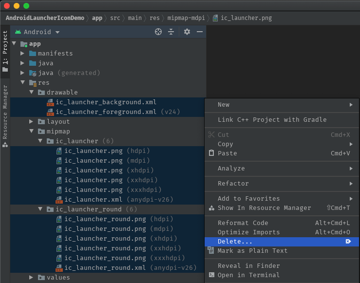
Click on "Delete Anyway" when Android Studio warns that the files are used in the project.
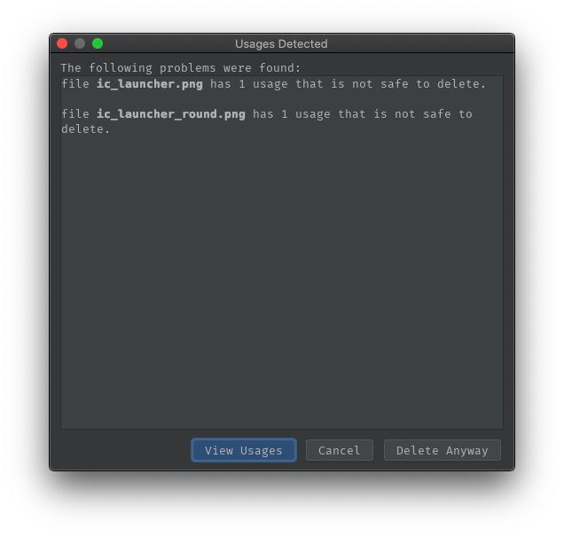
Below are the files you need to delete.
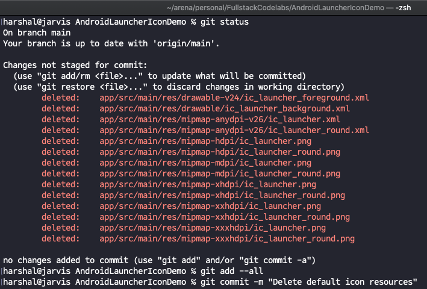
We will add the new icon to the project using Image Asset Studio.
Generate new icon using Image Asset Studio
To start, right-click on the res folder and click on New -> Image Asset
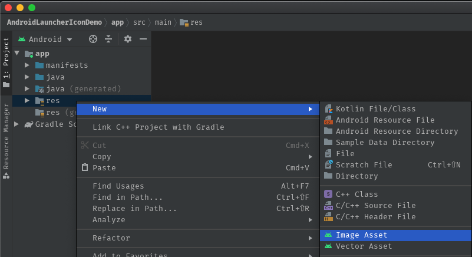
You will now see the Configure Image Asset dialog
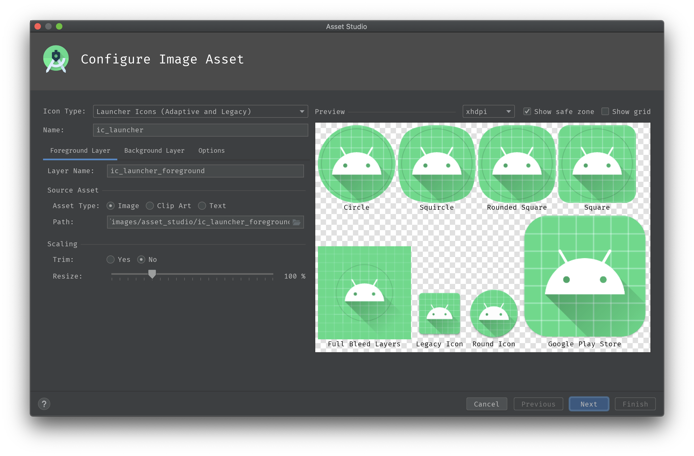
Click on the folder icon for the Path in the Foreground Layer and choose the foreground image
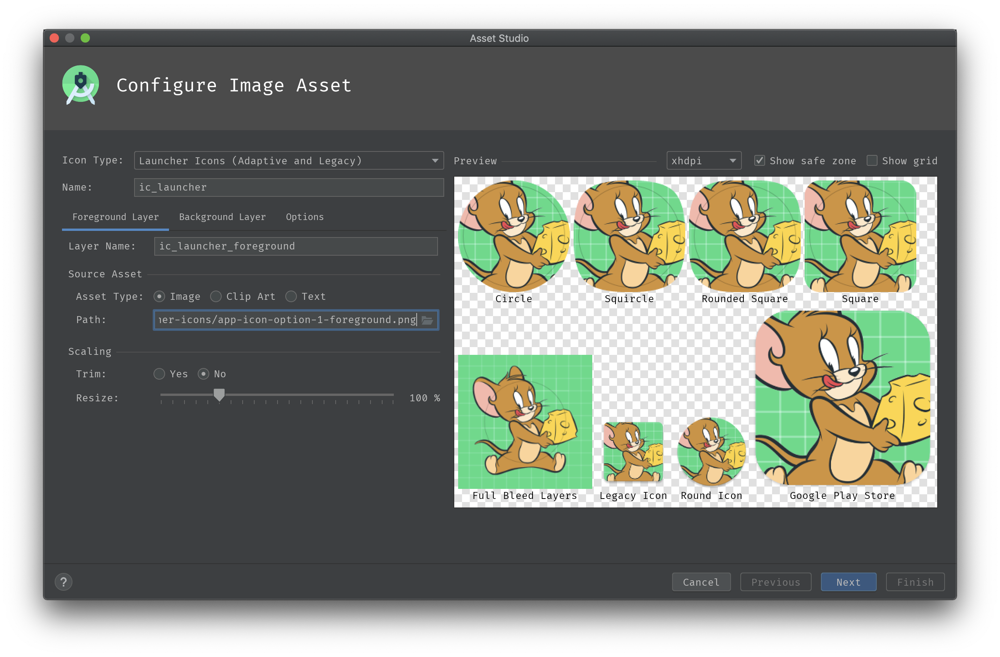
Adjust the Scaling -> Resize slider so that the logo fits perfectly withing the safe zone lines shown in the preview images
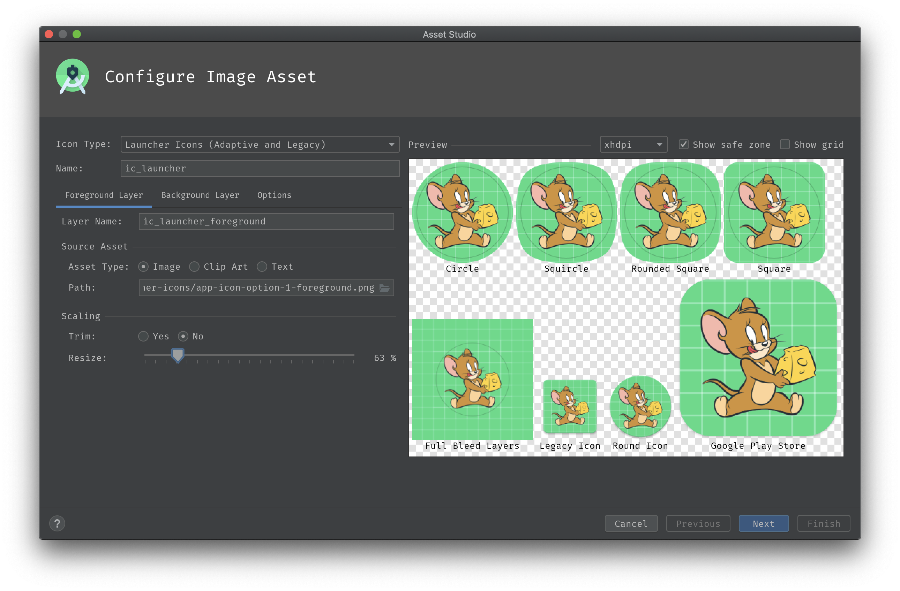
Click on the folder icon for the Path in the Background Layer and choose the background image
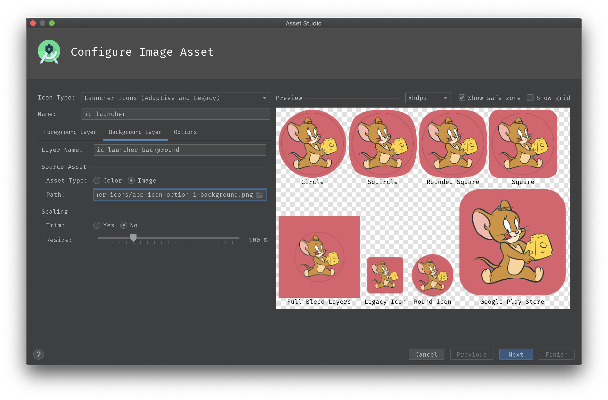
You can also update other icon related settings from the Options tab. For this codelab, we will leave them to their default values.

Clicking on Next will take you to the Confirm Icon Path screen. You can check preview of each icon file that will be generated. Click on Finish to proceed.
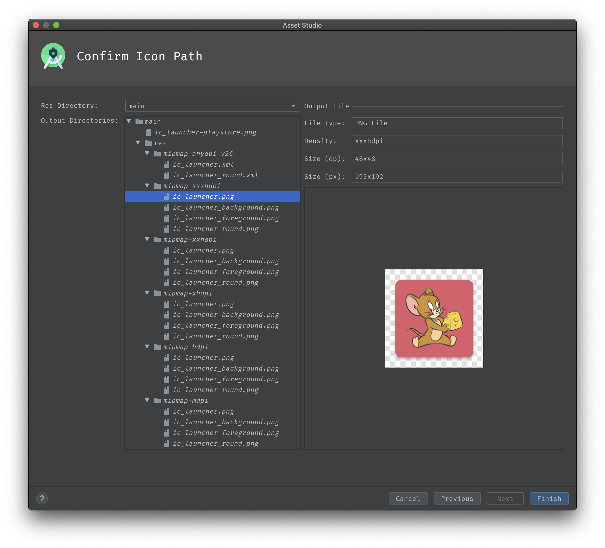
Run the app and you can see the new icon on the home screen.
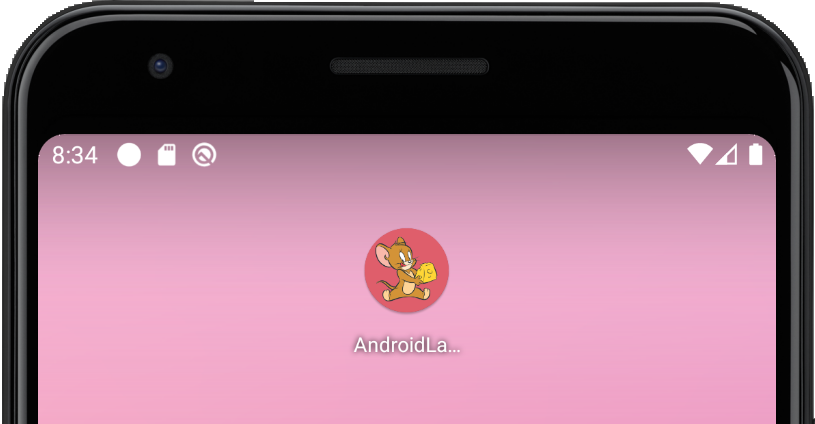
You can also check how the icon will look in different shapes using this utility.
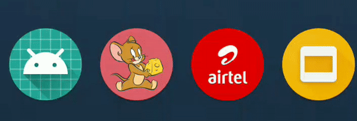
Let's take a look at the files generated by Android Studio to support Adaptive and Legacy launcher icons. Below are the files created by Android Studio when we generated launcher icons using Image Asset Studio.
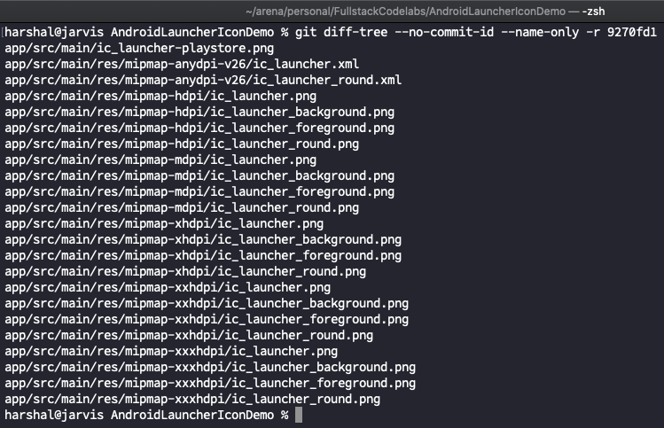
How are these files used?
AndroidManifest.xml references ic_launcher and ic_launcher_round from mipmap folder as launcher icons.
<manifest>
<application
android:icon="@mipmap/ic_launcher"
android:roundIcon="@mipmap/ic_launcher_round">
</application>
</manifest>
Android Studio generated files to support 2 types of launcher icons.
1. Adaptive Launcher Icons (API Level >= 26 - Android 8 and above)
Devices running API level greater than or equal to 26 support adaptive icons. Adaptive icons need separate images for foreground and background layer. Both layers are defined in the ic_launcher.xml and ic_launcher_round.xml file in mipmap-anydpi-v26 folder.
mipmap-anydpi-v26/ic_launcher.xml & mipmap-anydpi-v26/ic_launcher_round.xml (Both have the same content)
<?xml version="1.0" encoding="utf-8"?>
<adaptive-icon xmlns:android="http://schemas.android.com/apk/res/android">
<background android:drawable="@mipmap/ic_launcher_background"/>
<foreground android:drawable="@mipmap/ic_launcher_foreground"/>
</adaptive-icon>
Both the xml files reference ic_launcher_background and ic_launcher_foreground from mipmap folder. ic_launcher_background.png and ic_launcher_foreground.png are used for background and foreground layer of the adaptive icons from device specific density folder - (m|h|xh|xxh|xxxh)dpi.
- ic_launcher_foreground.png - To be used in the foreground layer of the adaptive icons
- ic_launcher_background.png - To be used in the background layer of the adaptive icons
2. Legacy Launcher Icons (API Level < 26)
Devices running API level less than 26 don't support adaptive icons. To devices that use circular launcher icons, a separate ic_launcher_round.png is generated. For all other devices, ic_launcher.png is used.
- ic_launcher.png - For devices that uses non-circular launcher icons
- ic_launcher_round.png - For devices that uses circular launcher icons
AndroidManifest.xml uses ic_launcher and ic_launcher_round from mipmap folder as launcher icons. For API level < 26, ic_launcher.png and ic_launcher_round.png are directly used as launcher icons from device specific density folder - (m|h|xh|xxh|xxxh)dpi.
File Sizes (px)
Below are the exact sizes of the images generated by Android Studio. If you want to replace the launcher icon files manually, you can refer to these sizes for reference.
Folder | ic_launcher_background.png | ic_launcher.png |
mipmap-mdpi | 108x108 | 48x48 |
mipmap-hdpi | 162x162 | 72x72 |
mipmap-xhdpi | 216x216 | 96x96 |
mipmap-xxhdpi | 324x324 | 144x144 |
mipmap-xxxhdpi | 432x432 | 192x192 |
In the earlier section we used ic_launcher_background.png file for generating the launcher icons using Image Asset Studio. Instead of an image file, its also possible to use a background color.
To do this, swith the Asset Type to ‘Color' while generating launcher icon using Asset Studio.
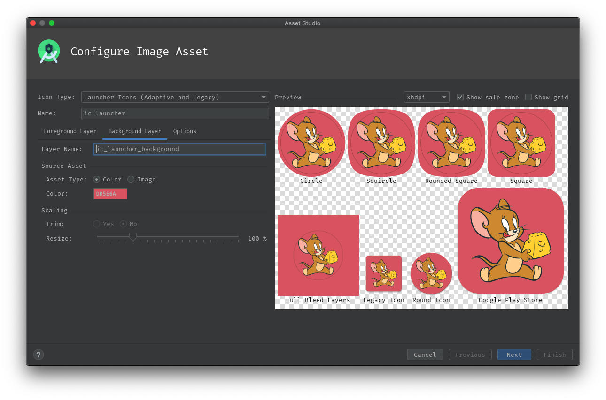
Below files will be generated for launcher icons.
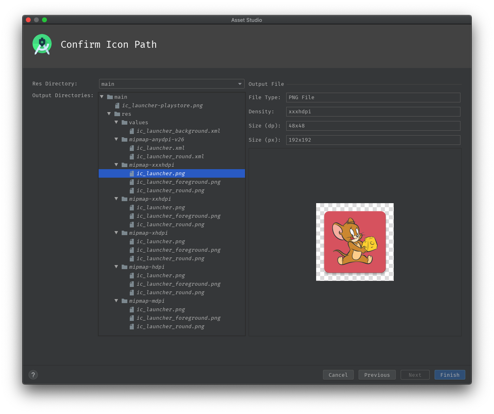
ic_launcher_background.xml will be generated in the app/src/main/res/values/ folder instead of ic_launcher_background.png in all mipmap density folders.
<?xml version="1.0" encoding="utf-8"?>
<resources>
<color name="ic_launcher_background">#DD5E6A</color>
</resources>
Run the app and you can see the new icon on the home screen. The resulting launcher icon will be similar to the one generated using image file.
AndroidManifest.xml
<manifest>
<application
android:icon="@mipmap/ic_launcher"
android:roundIcon="@mipmap/ic_launcher_round">
</application>
</manifest>
All files for supporting Adaptive and Legacy Launcher Icons
app/src/main/res/
|
|--- mipmap-anydpi-v26
| |--- ic_launcher.xml (Adaptive)
| |--- ic_launcher_round.xml (Adaptive)
|--- mipmap-mdpi
| |--- ic_launcher.png (Legacy) (48x48)
| |--- ic_launcher_background.png (Adaptive) (108x108)
| |--- ic_launcher_foreground.png (Adaptive) (108x108)
| |--- ic_launcher_round.png (Legacy) (48x48)
|--- mipmap-hdpi
| |--- ic_launcher.png (Legacy) (72x72)
| |--- ic_launcher_background.png (Adaptive) (162x162)
| |--- ic_launcher_foreground.png (Adaptive) (162x162)
| |--- ic_launcher_round.png (Legacy) (72x72)
|--- mipmap-xhdpi
| |--- ic_launcher.png (Legacy) (96x96)
| |--- ic_launcher_background.png (Adaptive) (216x216)
| |--- ic_launcher_foreground.png (Adaptive) (216x216)
| |--- ic_launcher_round.png (Legacy) (96x96)
|--- mipmap-xxhdpi
| |--- ic_launcher.png (Legacy) (144x144)
| |--- ic_launcher_background.png (Adaptive) (324x324)
| |--- ic_launcher_foreground.png (Adaptive) (324x324)
| |--- ic_launcher_round.png (Legacy) (144x144)
|--- mipmap-xxxhdpi
| |--- ic_launcher.png (Legacy)
| |--- ic_launcher_background.png (Adaptive) (432x432)
| |--- ic_launcher_foreground.png (Adaptive) (432x432)
| |--- ic_launcher_round.png (Legacy) (192x192)
|
ic_launcher.xml & ic_launcher_round.xml
<?xml version="1.0" encoding="utf-8"?>
<adaptive-icon xmlns:android="http://schemas.android.com/apk/res/android">
<background android:drawable="@mipmap/ic_launcher_background"/>
<foreground android:drawable="@mipmap/ic_launcher_foreground"/>
</adaptive-icon>
Source code
- AndroidLauncherIconDemo Github Repo
- AndroidLauncherIconDemo Alternate Background Color
- Foreground Icon Image
- Background Icon Image